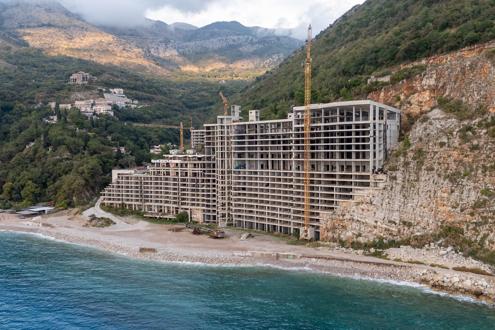
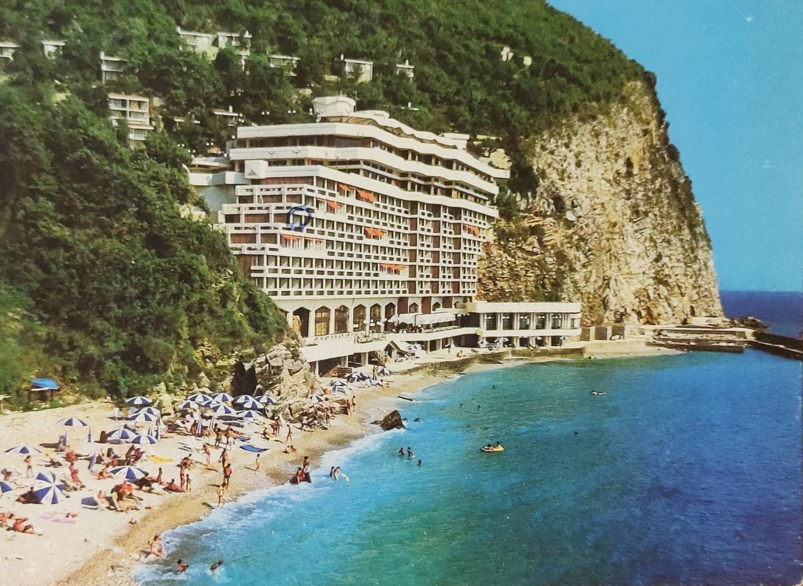
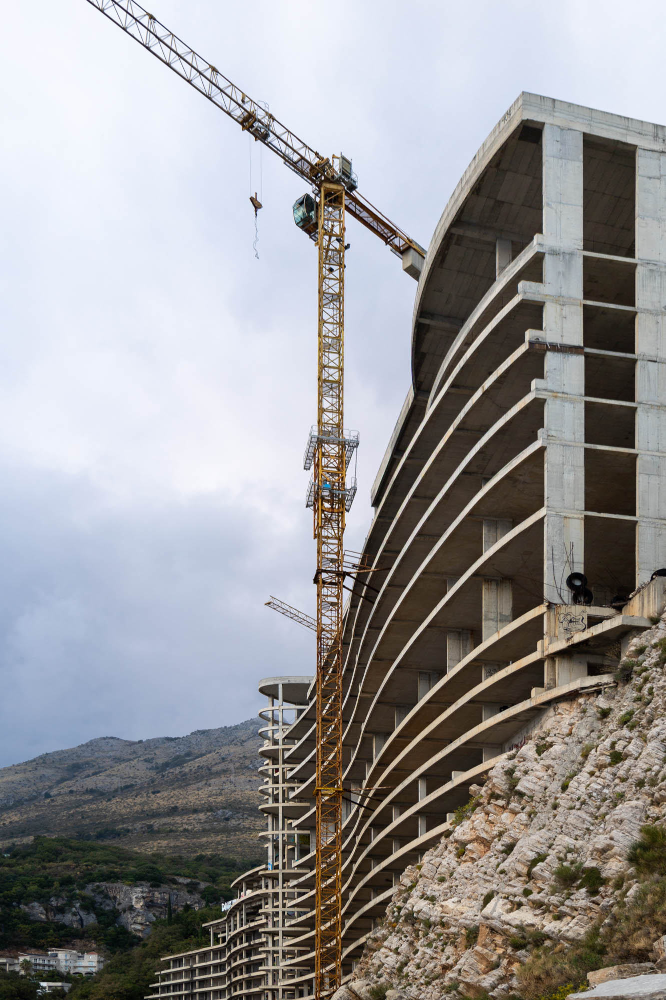
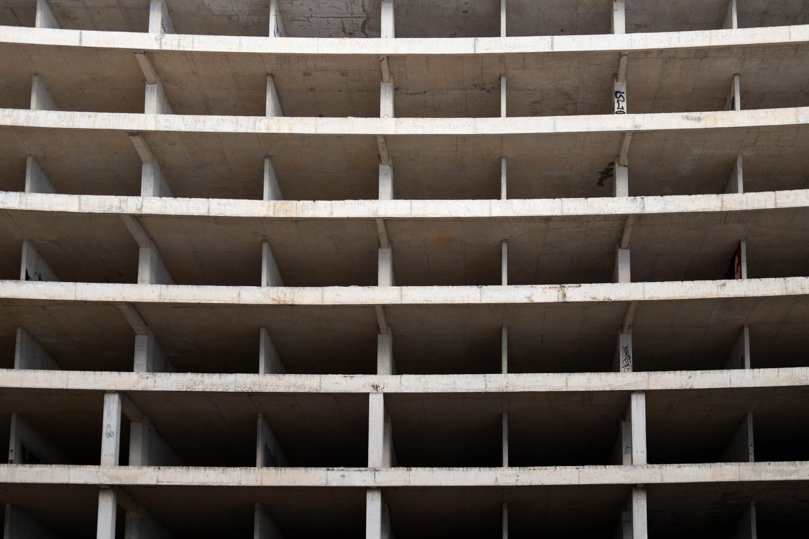
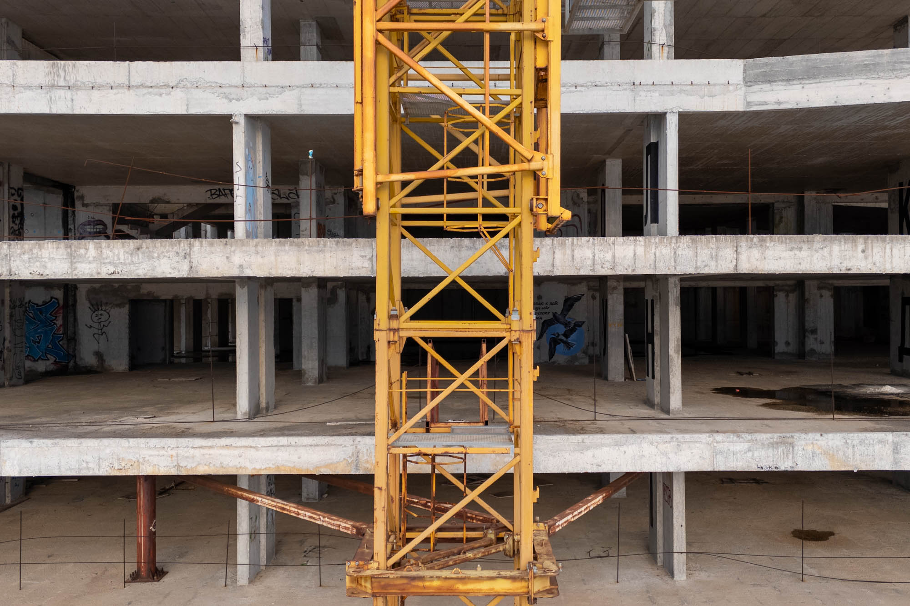
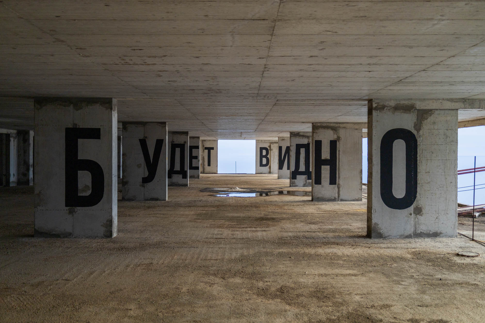
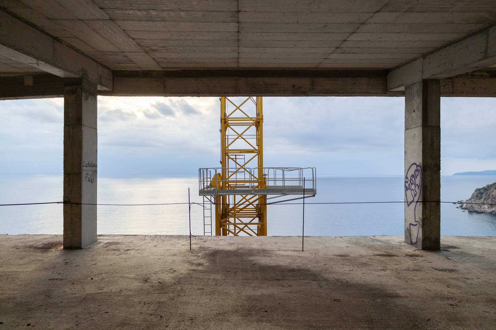
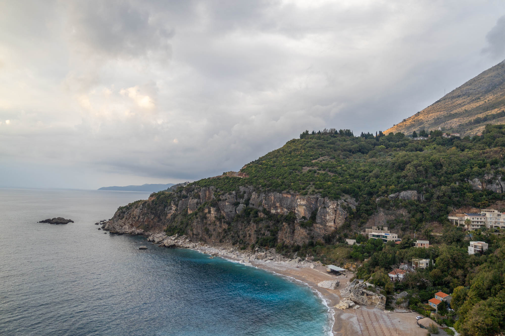

Built into the seaside cliff on the Adriatic coast is a hotel that was once open. Grand plans of privatisation and expansion were its undoing. A new 16-storey extension was built, but the building was never finished. More than a decade later, its floors remain empty and unused.

First opened to the public in 1983, “Hotel Aš” featured 419 beds across 12 floors, uniquely tucked between cliffs on a stunning beach often called the "Pearl of the Adriatic". Today, it stands as a symbol of failed privatisation, an abandoned eyesore that serves as a reminder of the dismantling of Yugoslavia.
Photo of the original Hotel Aš


Following the fall of communism, the hotel was privatised and sold to a group of Montenegrin and Russian businessmen with ambitious plans to redevelop the site. Their vision included expanding the hotel further into the cliffs, rebranding it as “Adriatic Star”, doubling its footprint, adding four additional storeys, 500 more beds, and extending the beach area.

After the sale was finalised in 2002, the hotel was immediately closed, its original structure gutted, and construction on the major expansion began. Progress was slow and dragged on for over a decade. In 2015, however, everything came to a standstill when allegations of malfeasance, criminal activity, and fraud forced construction to stop permanently.
The site has now sat empty for more than ten years as ongoing lawsuits related to the hotel’s privatisation continue. If you are interested in reading about the failed expansion, I found this great case study that offers a summary of the project's timeline and problems.


Across several floors, you’ll find large typographic pieces of graffiti. On the lower floor (not pictured), the words "ПОСЛЕ ВСЕГО" appear, Russian for "after everything". On the next floor (pictured above), "БУДЕТ ВИДНО" which translates to "we’ll see".
Together, the phrase "after everything, we’ll see", reads as a commentary on Montenegro’s uncertain outlook for the future of this abandoned structure and the beautiful bay it calls home.

